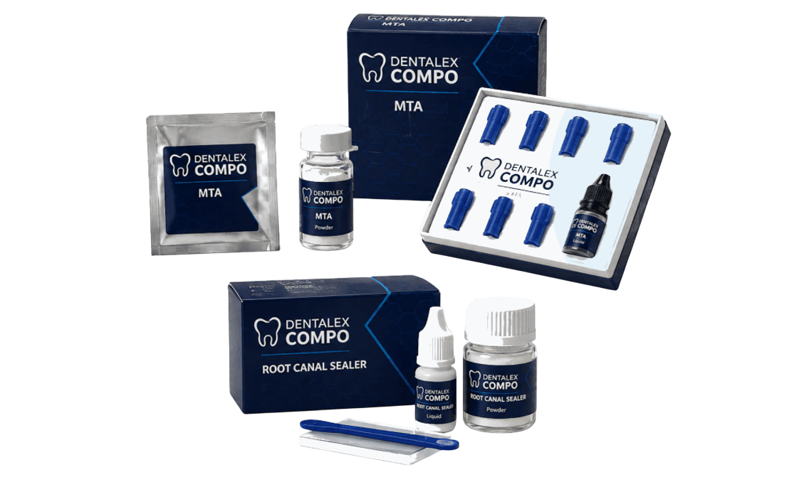

← Back to All Products
ENDODONTICS / REPAIR & SEALING
MTA & Root Canal Sealer
Root repair and permanent canal obturation.

Dentalex Compo MTA
Tricalcium silicate-based root repair material supplied as powder and liquid presentations. Fine-powder handling concept. Intended for root repair applications described in the approved IFU.
Material Type
Mineral Trioxide Aggregate
Delivery
Powder + Liquid
Reference
DXC-E01
Available Packaging
0.14 g + 5 ml
7 × 0.14 g + 5 ml
1 g + 5 ml
7 × 0.14 g + 5 ml
1 g + 5 ml
Root Canal Sealer
Powder-and-liquid root canal sealer concept for permanent root canal obturation workflows. Zinc-oxide-based sealer designed for use with gutta-percha points. Mixing and placement protocol follows the approved IFU.
Material Type
Zinc-oxide-based Sealer
Delivery
Powder + Liquid
Reference
DXC-E02
Available Packaging
15 g powder + 10 ml liquid